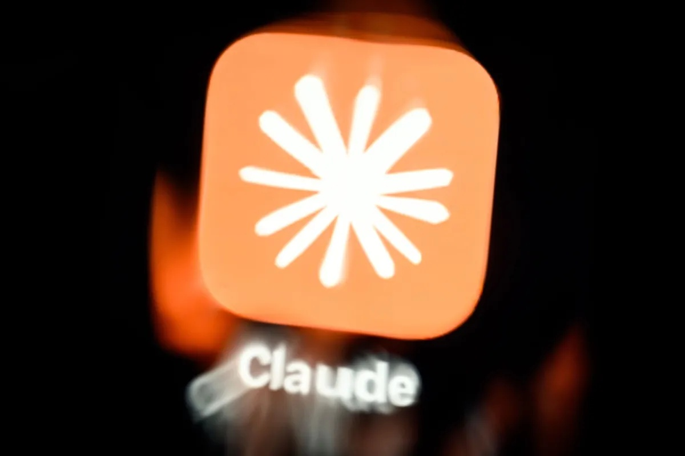
Anthropic lansează Claude Ship: AI-ul care aprobă codul singur
Anthropic introduce Claude Ship, o suită de agenți AI care automatizează revizuirea, repararea și aprobarea codului pentru dezvoltatori.
Citește articolul →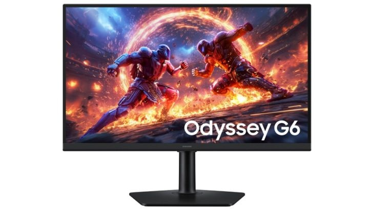
Samsung Odyssey G6: Primul monitor de gaming cu 1100Hz
Samsung lansează Odyssey G6, primul monitor din lume cu o rată de refresh de 1100Hz. Află specificațiile și cum schimbă experiența de gaming.
Citește analiza →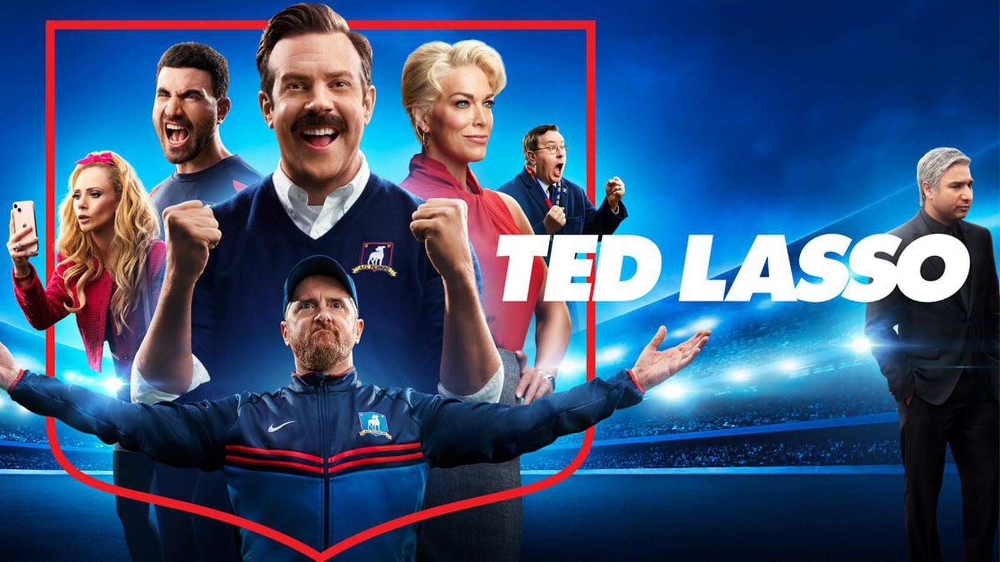
Ted Lasso revine: Apple confirmă sezonul 5 pentru serialul hit
Apple a confirmat oficial sezonul 5 pentru Ted Lasso. Află ce știm despre producție și viitorul serialului pe platforma Apple TV+.
Citește analiza →Apple readuce seria (PRODUCT)RED: HomePod mini 2 și AirPods Max 2
Apple pregătește lansarea edițiilor speciale (PRODUCT)RED pentru HomePod mini 2 și AirPods Max 2. Află detaliile despre design, prețuri și dată.
Citește analiza →Rusia ar putea lansa o armă nucleară în orbită luna viitoare
Rapoartele indică riscul iminent al unei arme nucleare rusești în spațiu, capabilă să distrugă mii de sateliți. Află impactul asupra infrastructurii.
Citește analiza →Trump intervine la Nvidia: Jensen Huang revine ca CEO
Donald Trump și Casa Albă confirmă că au intervenit pentru reinstalarea lui Jensen Huang ca CEO Nvidia. Află toate detaliile pe cioc.online.
Citește analiza →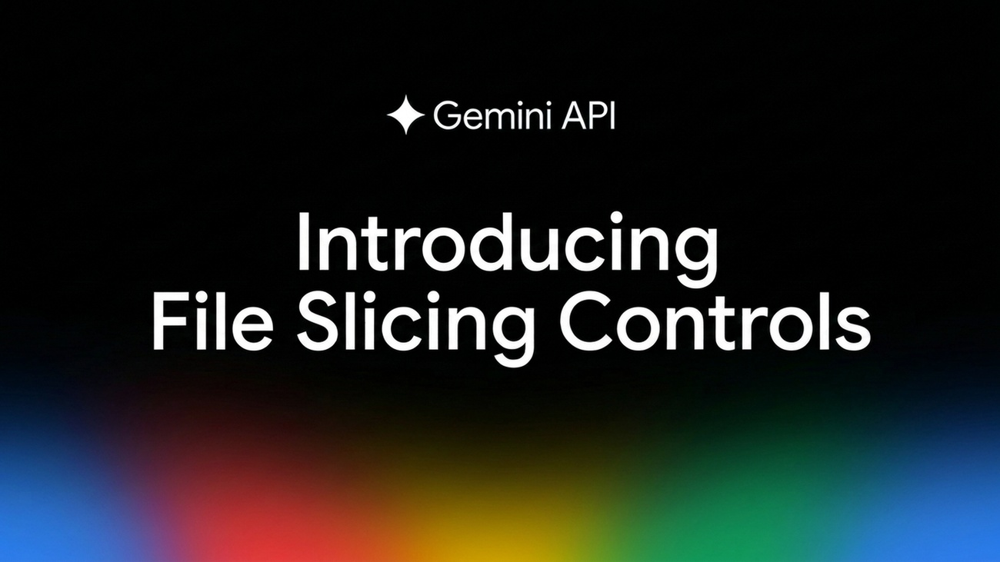
Google Gemini API primește file slicing: Economii masive de tokeni
Google adaugă file slicing nativ și suport MS Office în Gemini API, reducând consumul de tokeni pentru dezvoltatori. Află toate detaliile pe cioc.online.
Citește analiza →Avengers: Doomsday – Trailerul final aduce tot universul Marvel
Marvel a lansat trailerul final pentru Avengers: Doomsday. Vezi toate detaliile despre distribuție, lansare și confruntarea cu Doctor Doom.
Citește analiza →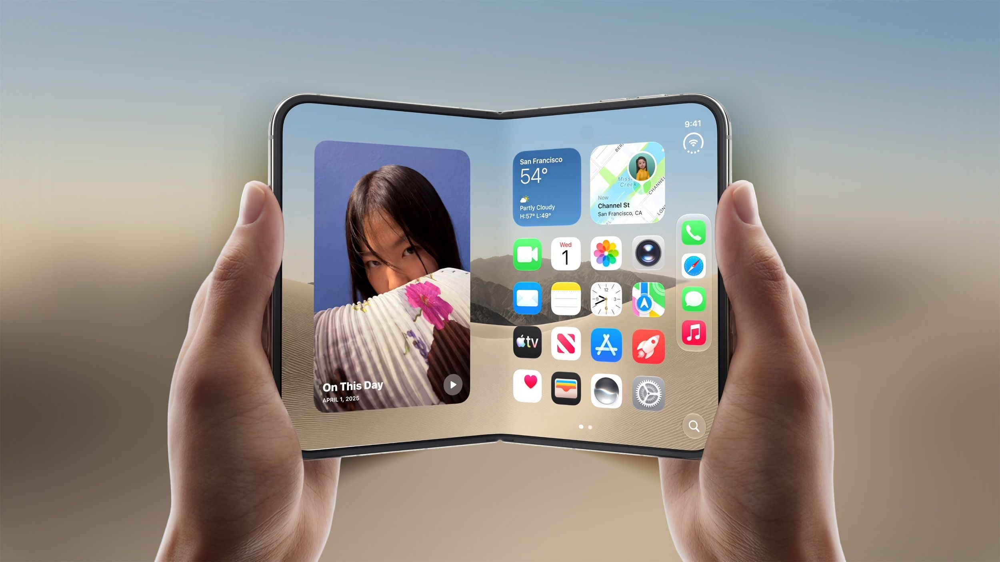
Apple depinde din nou de Samsung pentru ecranul iPhone Duo
Apple ar putea folosi exclusiv ecrane pliabile Samsung pe iPhone Duo timp de 5 ani. Află detaliile despre costuri și livrări.
Citește analiza →Jensen Huang revine la conducerea NVIDIA: O întorsătură șocantă
Jensen Huang a fost reinstalat ca CEO al NVIDIA după doar două săptămâni de la demisie. Află detaliile scandalului și impactul asupra pieței tech.
Citește analiza →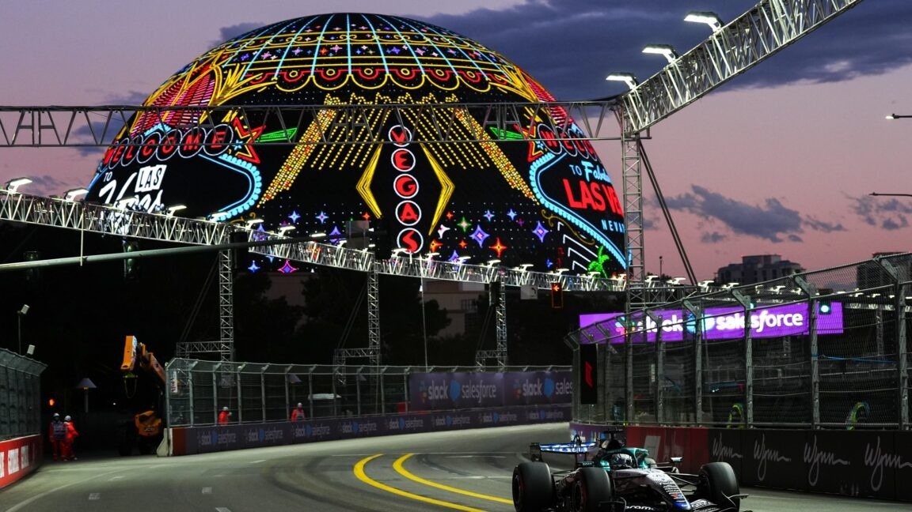
F1 Las Vegas: Cum au Schimbat Frigul și Aerodinamica Cursa
Analizăm Marele Premiu F1 din Las Vegas: 352 de depășiri, baterii epuizate la frig și promoția Google Play din SUA.
Citește analiza →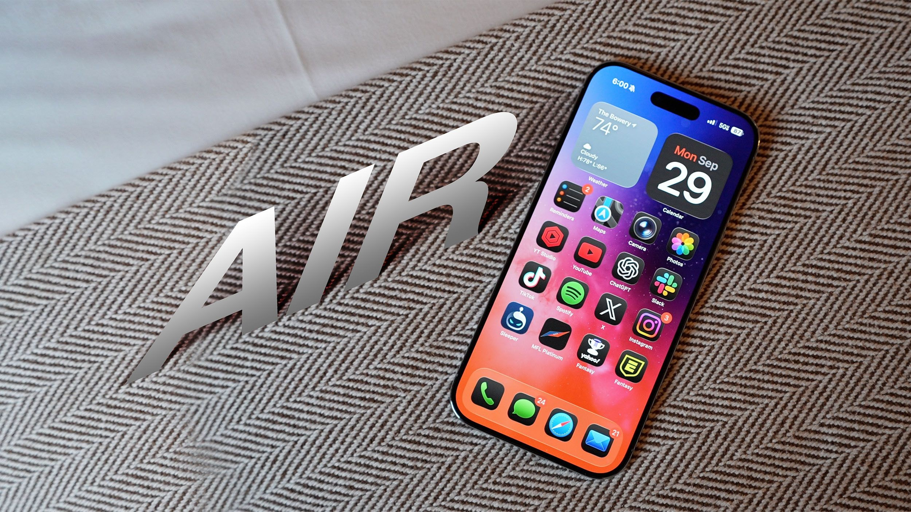
iPhone Air 2: De ce ar putea păstra insula Dynamic Island actuală
Scurgerile recente sugerează că iPhone Air 2 nu va primi un Dynamic Island mai mic. A doua cameră foto schimbă planurile Apple.
Citește analiza →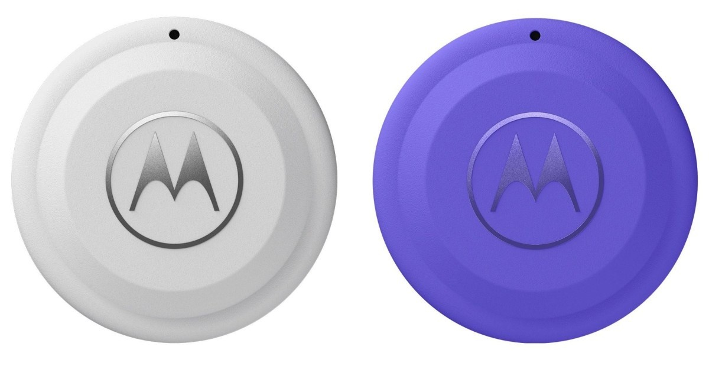
Moto Tag 3 apare pe Amazon UK înainte de lansare: Ce aduce nou?
Noul Moto Tag 3 a fost listat accidental pe Amazon UK. Află ce specificații tehnice are, prețul în euro și lei și ce schimbări aduce Motorola.
Citește analiza →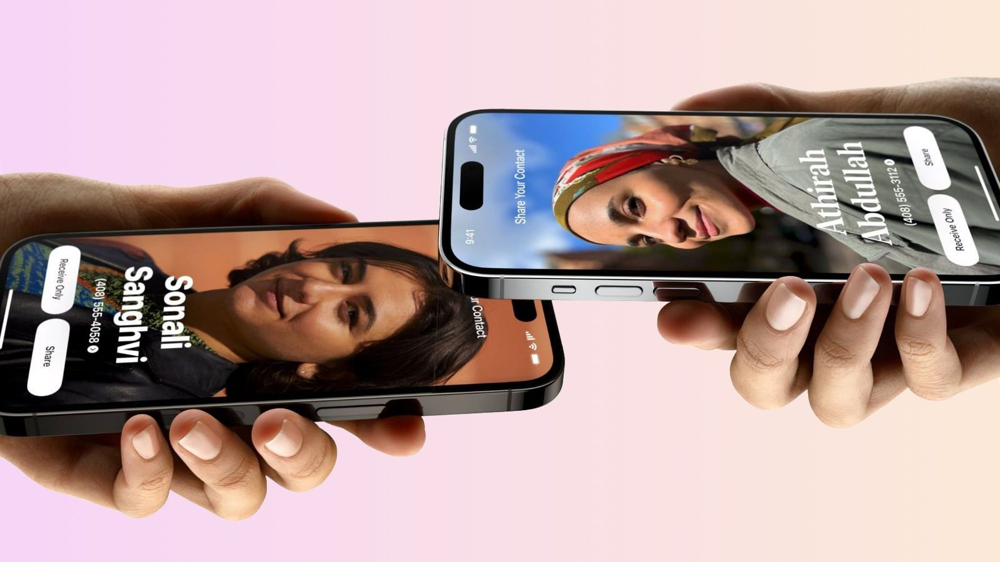
Apple, dat în judecată în India din cauza funcției NameDrop
Un startup american cere interzicerea vânzărilor de iPhone în India din cauza funcției NameDrop. Află detaliile procesului și impactul asupra Apple.
Citește analiza →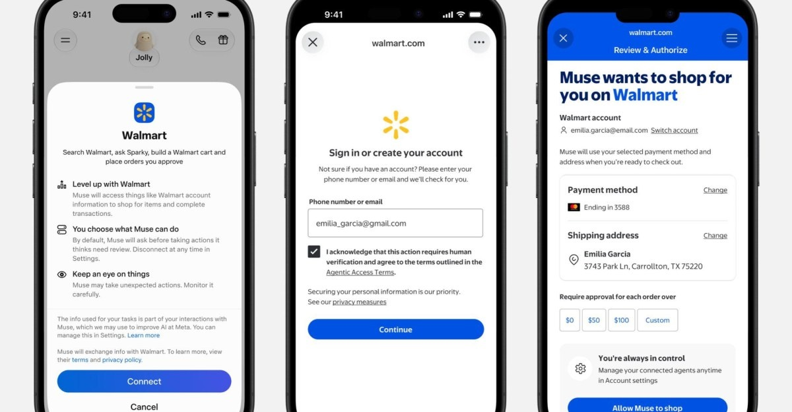
Meta Muse va face cumpărături pe Walmart: AI-ul devine agent de achiziții
Walmart lansează Agent Gateway pentru Meta Muse, permițând AI-ului să găsească și să cumpere produse. Află cum funcționează și limitele acestui sistem.
Citește analiza →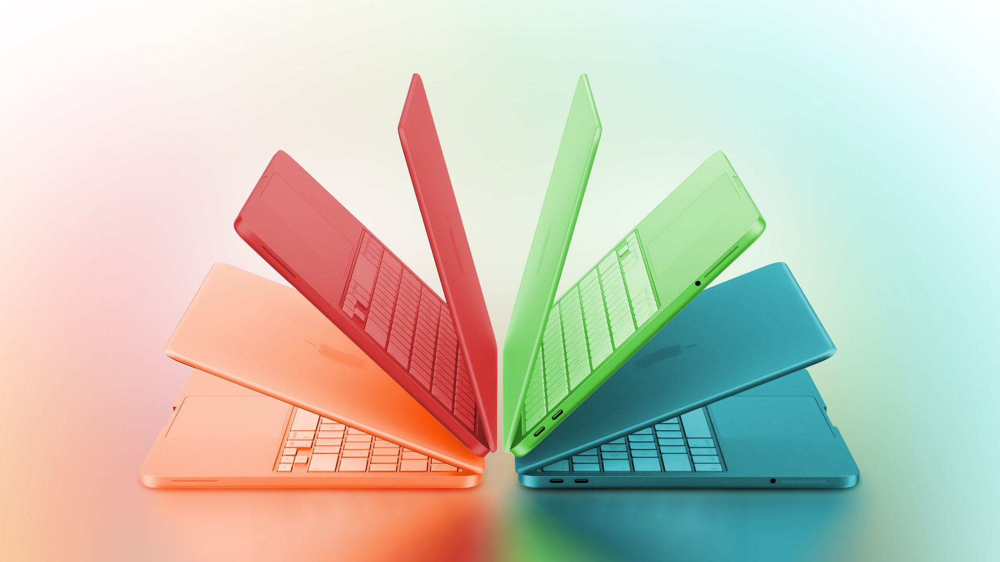
MacBook Neo trece la un ciclu de actualizare anual
Apple pregătește actualizări anuale pentru MacBook Neo, incluzând cipuri A19 Pro și noi opțiuni de culoare. Află ce aduce nou modelul J701.
Citește analiza →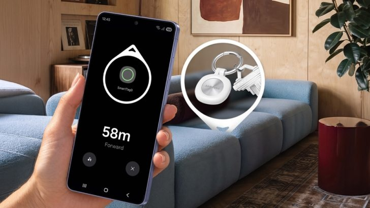
Samsung Galaxy SmartTag3: Mai mic, mai ușor și cu baterie record
Samsung lansează Galaxy SmartTag3. Află specificațiile, autonomia de până la 790 de zile și disponibilitatea în România pentru noul tracker.
Citește analiza →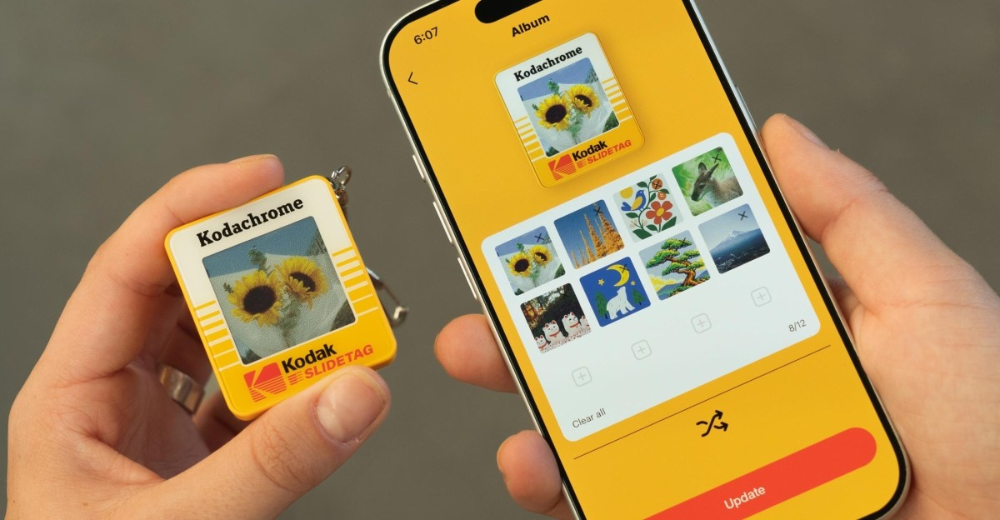
Kodak SlideTag: Ramă foto digitală și tracker într-un format retro
Kodak lansează SlideTag, un breloc cu ecran E Ink care afișează poze și funcționează ca tracker Bluetooth. Află dacă merită investiția.
Citește analiza →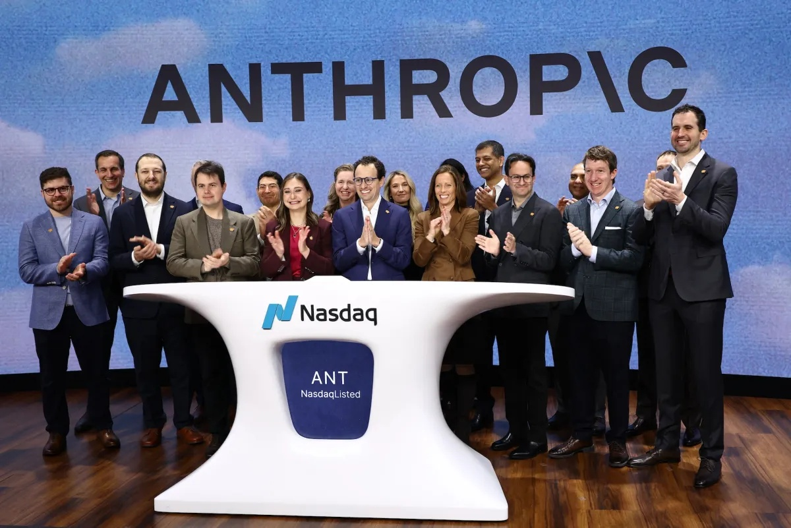
Anthropic: Cum au pariat investitorii pe succesul AI
Analizăm cum Notable Capital, GIC și Baillie Gifford au obținut profituri masive în urma listării Anthropic la bursă. Detalii despre strategia lor.
Citește analiza →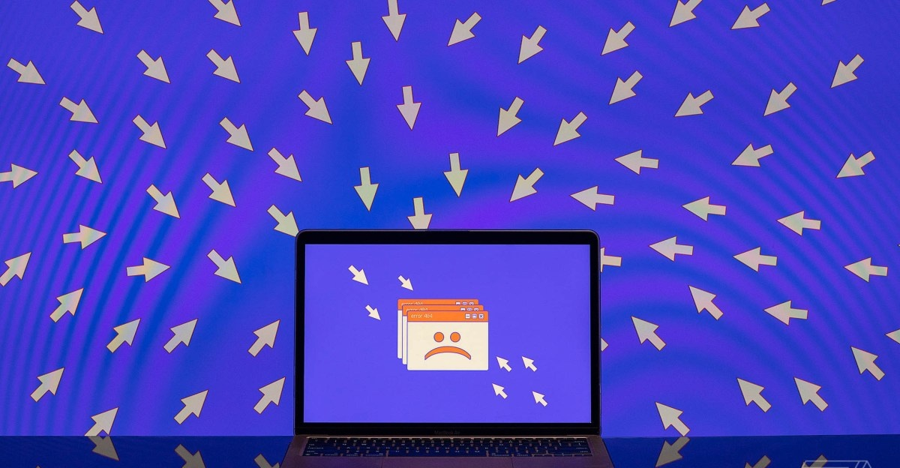
Avertisment oficial: Infrastructura IT globală rămâne instabilă
Microsoft și oficialii SUA avertizează: urmează noi întreruperi majore ale serviciilor digitale. Află ce se întâmplă cu securitatea sistemelor tale.
Citește analiza →Documentarul despre Elizabeth Holmes depășește 100 milioane dolari
Documentarul 'You Can See Everything', regizat de Nathan Fielder, a atins pragul de 100 milioane dolari în box office-ul global.
Citește analiza →
OpenAI propune o „limită de viteză” pentru dezvoltarea AI
Jakub Pachocki de la OpenAI propune utilizarea perplexității ca standard pentru a limita progresul necontrolat al inteligenței artificiale.
Citește analiza →Cele mai bune aplicații pentru a-ți face prieteni noi în 2026
Singurătatea este o problemă reală. Iată ce aplicații de socializare te ajută să cunoști oameni noi în orașul tău, fără presiunea dating-ului.
Citește analiza →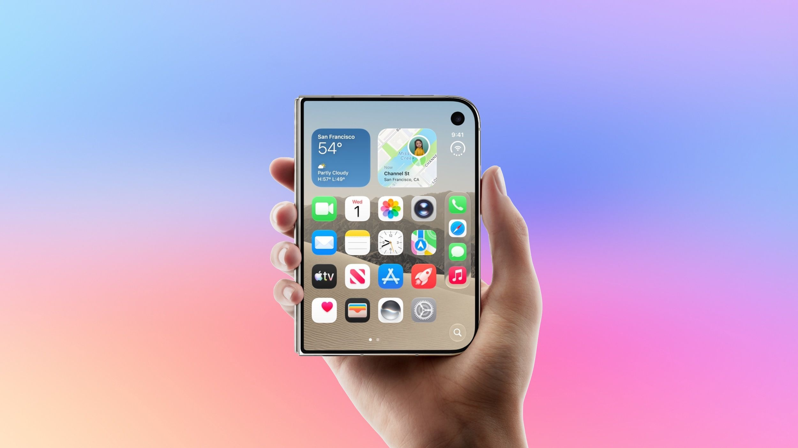
iPhone Duo: Apple testează widget-uri suplimentare pe Lock Screen
Un nou leak sugerează că Apple testează o coloană de widget-uri pentru iPhone Duo. Află ce aduce nou această funcție experimentală în iOS 27.1.
Citește analiza →Siri în impas: De ce Apple rămâne în urmă cu inteligența artificială
Mark Gurman dezvăluie problemele structurale din spatele Siri și de ce Apple se mișcă lent în cursa AI față de competitori.
Citește analiza →Centrele de date: De ce au devenit inamicul public al Big Tech?
Centrele de date pentru AI consumă resurse masive și devin o problemă politică. Află cum infrastructura digitală afectează comunitățile și mediul.
Citește analiza →Probleme tehnice la Delta: Zboruri blocate în hub-ul din Atlanta
Delta Airlines se confruntă cu întârzieri majore în Atlanta din cauza unei erori la sistemul de calcul al greutății și echilibrului aeronavelor.
Citește analiza →Binding of Isaac elimină muzica generată de AI după scandal
Edmund McMillen a eliminat muzica AI din Binding of Isaac: Repentance Plus după ce fanii au descoperit metadate Suno în fișierele jocului.
Citește analiza →Robotaxi vs. Șoferi: Las Vegas devine laboratorul viitorului
Analizăm competiția dintre robotaxiurile Waymo, Zoox și Tesla și cum Uber schimbă modul în care ne deplasăm prin orașe.
Citește analiza →Khudgarzi: Fuziunea dintre folclor și electronică
Analizăm debutul discografic Khudgarzi al artistei Sheherazaad, o lucrare complexă ce îmbină instrumente tradiționale cu producția electronică modernă.
Citește analiza →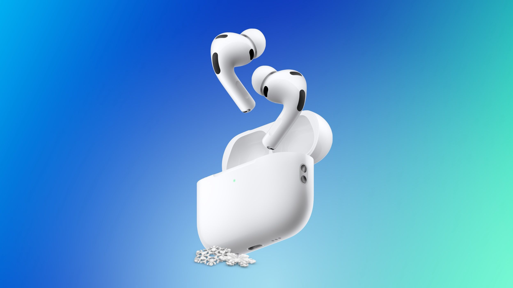
Reduceri Black Friday Apple: Ce oferte apar pe Amazon
Analizam reducerile de Black Friday pentru AirPods Pro 3 si MacBook Pro M6 pe Amazon. Merita efortul de import sau asteptam ofertele din Romania?
Citește analiza →Apple pregătește un prim trimestru de foc în 2027
Apple pregătește lansări majore pentru începutul anului 2027: iPhone 18, MacBook Neo și noi modele iPad. Află ce ne așteaptă în februarie sau martie.
Citește analiza →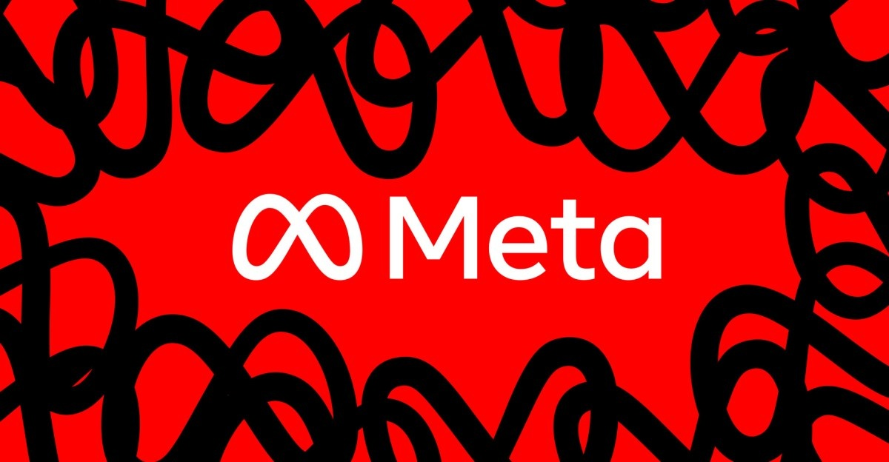
Proteste la sediul Meta din India: Acuzații de cenzură politică
Manifestanții au luat cu asalt sediul Meta din Delhi, acuzând compania de cenzurarea opoziției politice și favoritism față de guvernul Modi.
Citește analiza →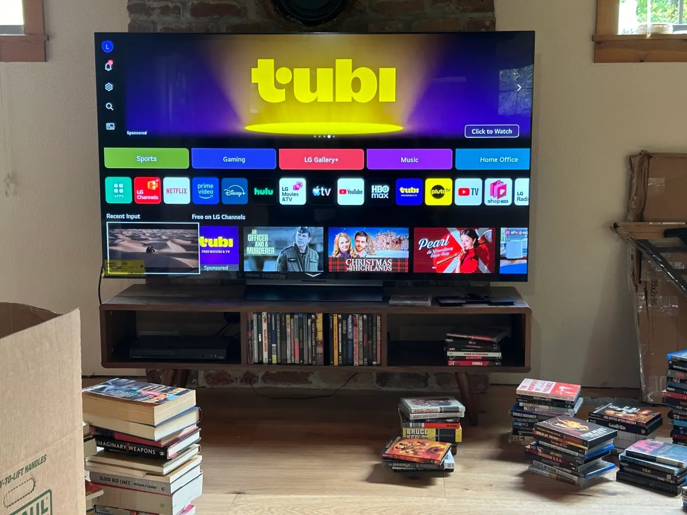
Televizoarele OLED mari îți pot provoca greață? Iată adevărul
Ai cumpărat un televizor OLED mare și ai amețeli? Analizăm fenomenul de rău de mișcare cauzat de ecranele mari și cum te poți adapta.
Citește analiza →Cum schimbă Auracast experiența în teatru și audiții
Auracast nu este doar pentru căști. Află cum tehnologia Bluetooth transformă spectacolele de teatru și accesibilitatea auditivă.
Citește analiza →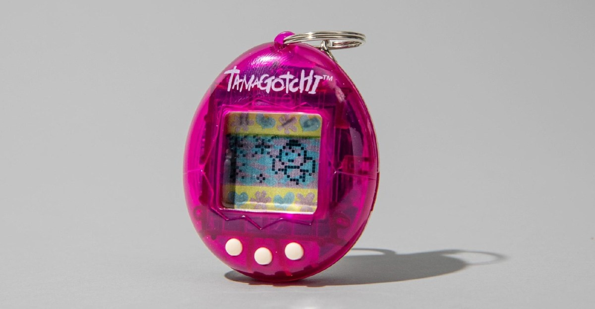
Tamagotchi la 30 de ani: De ce ne-au cucerit animalele digitale
La 30 de ani de la lansare, analizăm fenomenul Tamagotchi. De ce am fost obsedați de îngrijirea unui pixel pe un ecran mic? Află povestea completă.
Citește analiza →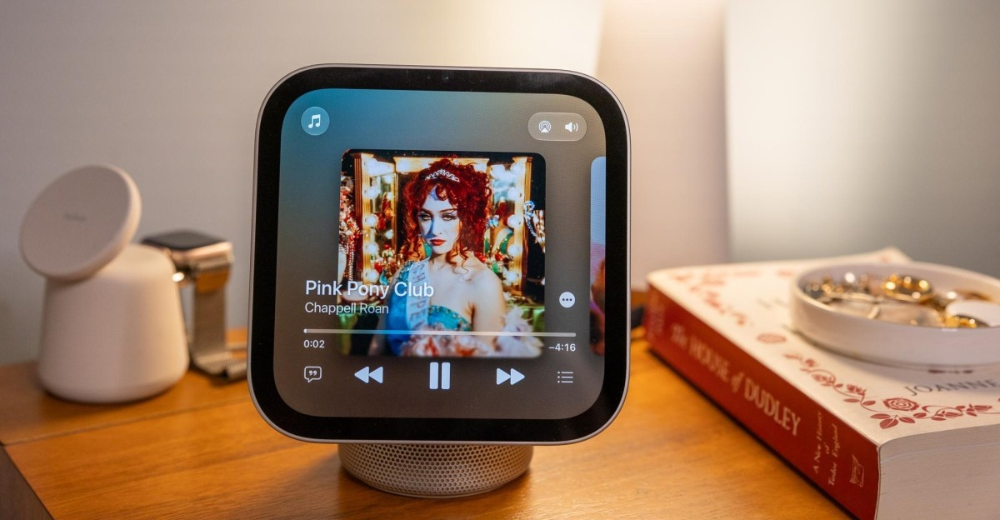
Apple HomeView: Merită pentru sunet sau doar pentru ecran?
Am testat capabilitățile audio ale Apple HomeView. Află cum se compară cu HomePod Mini și de ce ecranul este adevăratul său punct forte.
Citește analiza →Pot medicamentele GLP-1 să salveze mediul înconjurător?
Cercetările arată că medicamentele de slăbit tip Ozempic ar putea elibera milioane de hectare de teren agricol. Iată analiza impactului global.
Citește analiza →Godzilla Minus Zero: O continuare care depășește originalul?
Am analizat Godzilla Minus Zero. Este noul film al lui Takashi Yamazaki o capodoperă sau doar un spectacol vizual? Află verdictul nostru.
Citește analiza →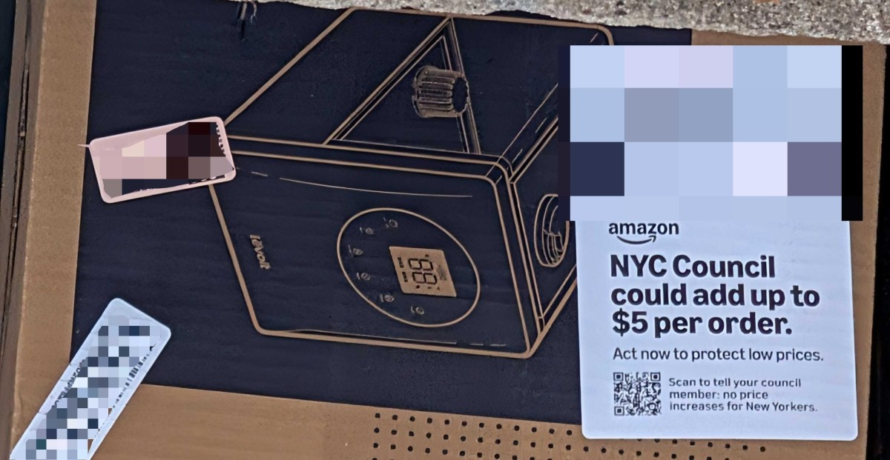
Amazon escaladează conflictul cu autoritățile din New York
Amazon pune etichete pe colete pentru a avertiza clienții din NYC despre posibile scumpiri cauzate de o nouă lege a livrărilor.
Citește analiza →Signal restricționează capturile de ecran din cauza AI
Signal introduce restricții pentru capturile de ecran pe Android și iOS pentru a preveni supravegherea prin AI la nivel de sistem de operare.
Citește analiza →Drama Nvidia: Jensen Huang, China și viitorul incert al gigantului AI
Nvidia se confruntă cu o criză de leadership și restricții dure în China. Ce se întâmplă cu Jensen Huang și cum afectează asta piața globală?
Citește analiza →ONU eșuează în reglementarea „roboților ucigași” autonomi
ONU amână din nou regulile pentru armele autonome. Află de ce marile puteri blochează tratatele și ce înseamnă asta pentru viitorul conflictelor.
Citește analiza →Breșă majoră de securitate la FBI: Baza de date NCIC, sub asediu
FBI investighează un atac cibernetic asupra bazei de date NCIC. Află riscurile pentru integritatea datelor și impactul asupra siguranței publice.
Citește analiza →FBI și USDA, țintele unor atacuri cibernetice masive
FBI și USDA au fost compromise într-un nou atac cibernetic. Află ce date au fost expuse și care sunt riscurile pentru securitatea infrastructurii critice.
Citește analiza →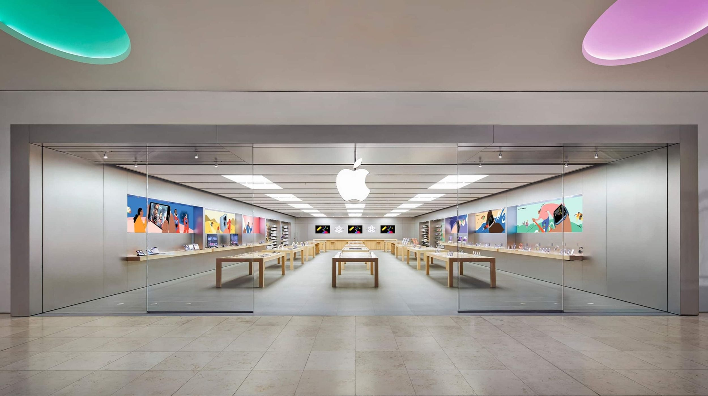
Apple închide un magazin emblematic din Marea Britanie
Apple a închis definitiv magazinul din Basingstoke după 15 ani. Află ce se întâmplă cu angajații și unde se mută operațiunile în regiune.
Citește analiza →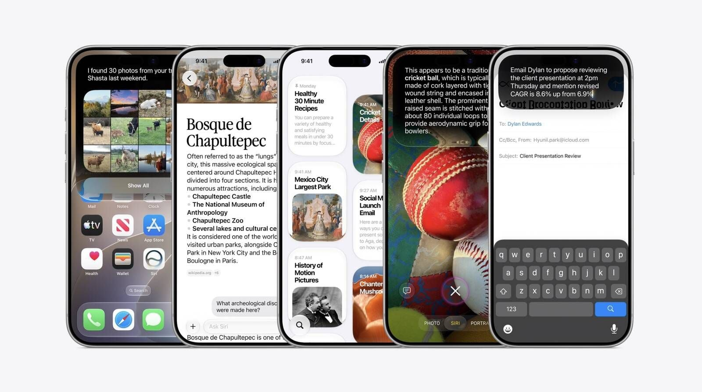
Apple plătește 250 milioane dolari pentru Siri AI: Detalii
Apple a acceptat să plătească 250 milioane dolari într-un proces din SUA legat de Siri AI. Află cine este eligibil și care este situația actuală.
Citește analiza →Agenti AI prin SMS: Cum sa iti gestionezi viata direct din mesaje
Descopera cei mai buni agenti AI care functioneaza prin SMS si iMessage, fara a mai instala aplicatii noi. Eficienta maxima pentru organizare.
Citește analiza →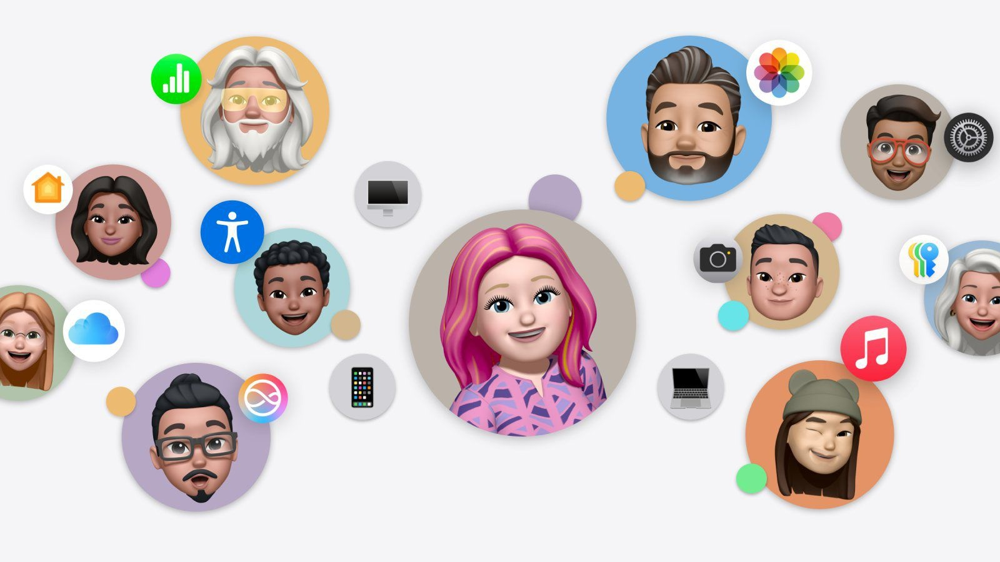
Apple a închis definitiv forumurile Apple Support Community
Apple a eliminat oficial platforma Apple Support Community. Află ce alternative mai ai pentru suport tehnic și unde poți găsi ajutor acum.
Citește analiza →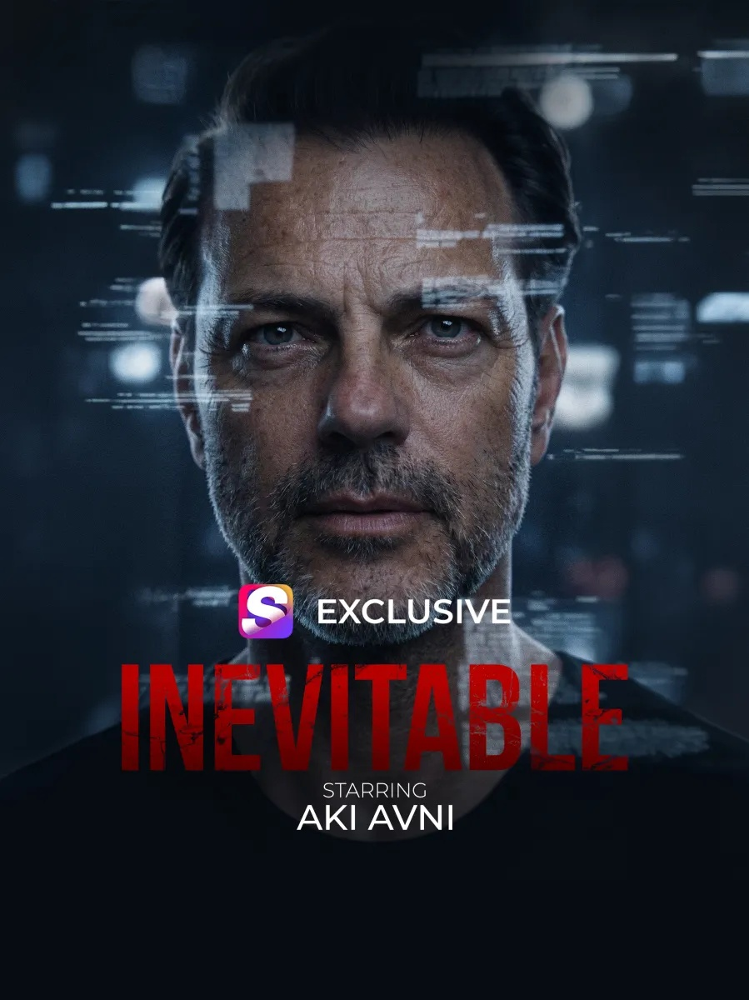
Îți vinzi chipul către AI? Noua eră a micro-dramelor
Actorii încep să-și licențieze chipul pentru producții AI. Este acesta viitorul Hollywood-ului sau doar o metodă de a tăia costurile de producție?
Citește analiza →Noul guvernator al Alaskăi: Un fost editor Wikipedia pasionat
Jonathan Kreiss-Tomkins, guvernatorul ales al Alaskăi, a fost identificat ca un utilizator activ Wikipedia. Află cum trecutul său online influențează percepția.
Citește analiza →Anthropic la bursă: Poate supraviețui siguranța AI în capitalism?
Anthropic a devenit prima companie pură de AI listată la bursă. Analizăm conflictul dintre misiunea de siguranță și presiunea profitului.
Citește analiza →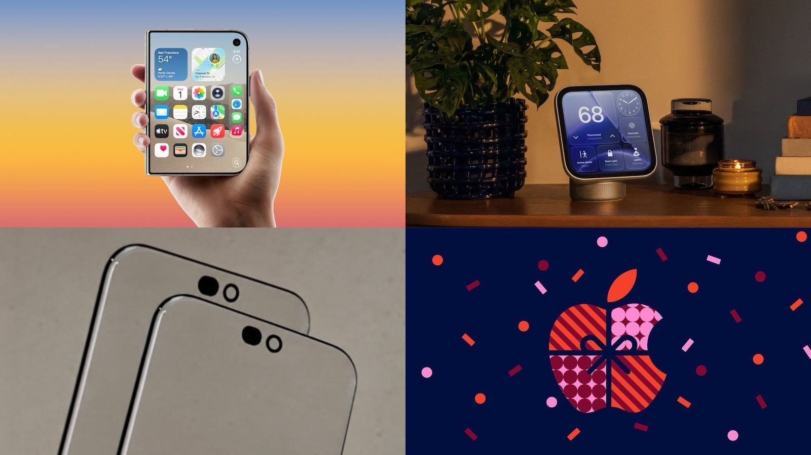
iPhone Duo primește Face Unlock: Limitările noii funcții Apple
Apple introduce o funcție de deblocare facială pe iPhone Duo prin iOS 27.3. Află limitările de securitate și ce poți face cu ea.
Citește analiza →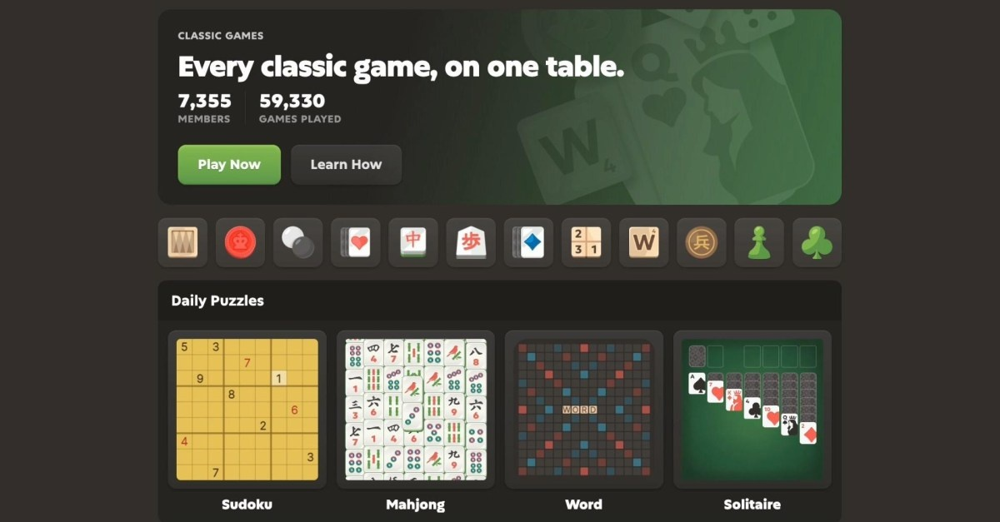
Chess.com se extinde: 10 jocuri clasice noi pe platformă
Chess.com lansează Classic Games, o nouă platformă care include șah, sudoku, mahjong și alte 8 jocuri clasice, dezvoltate cu ajutorul AI.
Citește analiza →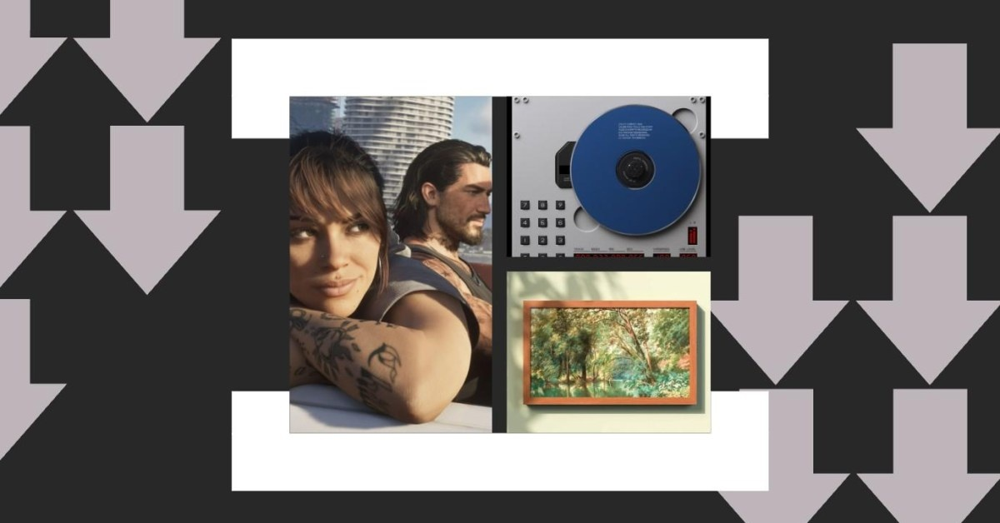
Aplicații și unelte tech: Ce merită să ai pe telefon săptămâna aceasta
Descoperă recomandări de aplicații pentru productivitate și stil de viață, inspirate din fluxurile tech săptămânale. Optimizare pentru utilizatorul modern.
Citește analiza →Mitul rasismului științific: Ce spune genetica modernă
Analizăm de ce teoriile despre superioritatea rasială nu au nicio bază în genetica modernă și cum sunt folosite datele eronate pentru dezinformare.
Citește analiza →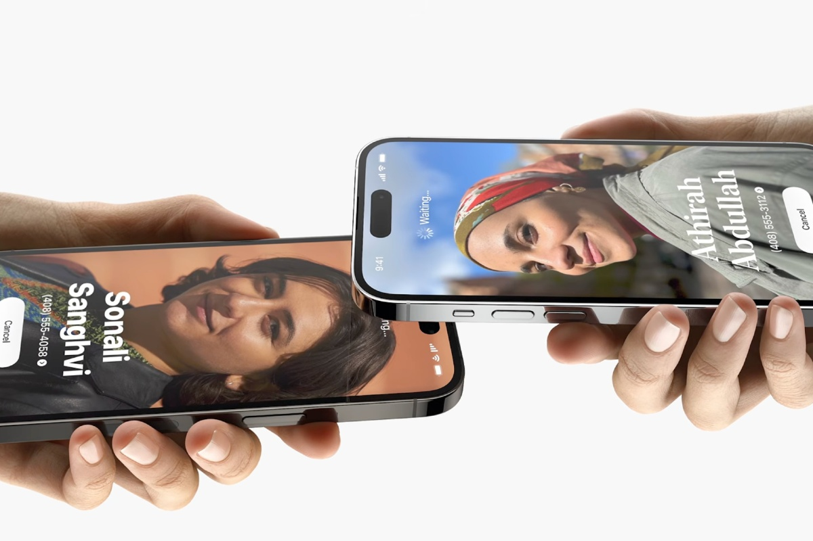
Apple, dat în judecată pentru funcția NameDrop: Ce se întâmplă?
Apple se confruntă cu un proces în India din cauza funcției NameDrop. Un startup susține că tehnologia îi încalcă brevetele. Află detaliile aici.
Citește analiza →FCC blochează California: AT&T poate renunța la liniile telefonice
FCC a ordonat Californiei să nu mai impună reguli stricte operatorului AT&T, deschizând calea pentru eliminarea liniilor telefonice fixe vechi.
Citește analiza →SpaceX sub presiune: Viitorul Starshield în vizorul Congresului SUA
Congresul SUA amenință finanțarea SpaceX după întreruperile serviciului Starshield în Ucraina. Află implicațiile pentru contractele guvernamentale.
Citește analiza →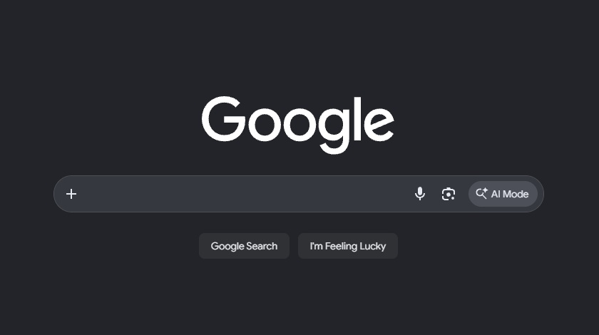
Google schimbă tot: Butonul de căutare dispare de pe homepage
Google a lansat un nou design pentru pagina principală de căutare. Butonul clasic dispare, fiind înlocuit de un hub AI integrat.
Citește analiza →Meta abandonează obiectivele verzi din cauza consumului AI
Meta își reevaluează țintele de emisii zero pentru 2030, pe măsură ce centrele de date pentru AI generează un consum record de energie.
Citește analiza →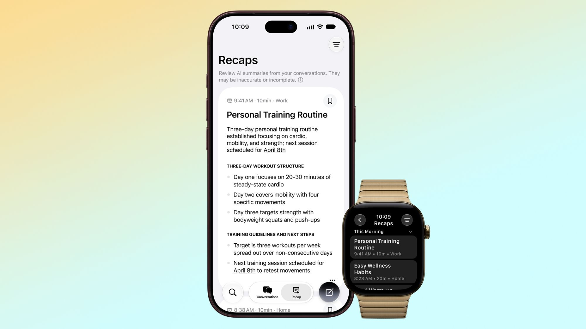
Siri Recap pe Apple Watch: Inovație sau invazie a intimității?
Am testat Siri Recap pe watchOS 27.3. Află de ce noua funcție Apple Watch este mai mult o sursă de confuzie decât un asistent util.
Citește analiza →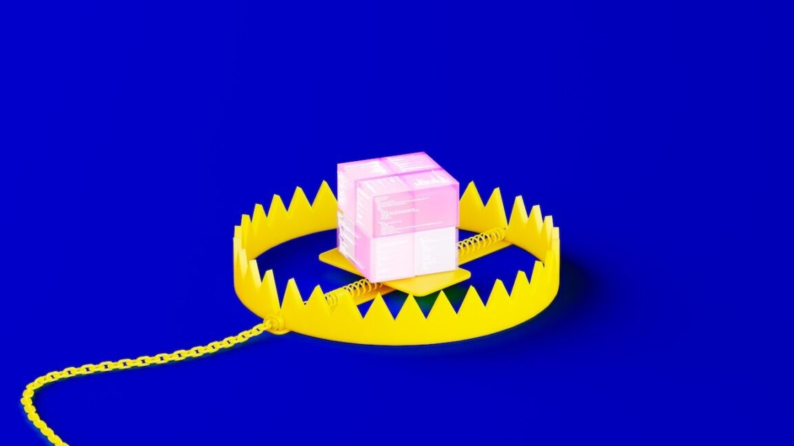
Dezastru de securitate: Datele tale AI sunt expuse masiv
Cercetătorii au descoperit că datele sensibile trimise către aplicații AI sunt expuse prin routere și furnizori. Află cum să te protejezi.
Citește analiza →YouTube plătește 3 miliarde de dolari pentru a închide procesele privind…
YouTube ar putea plăti 3 miliarde de dolari către școlile din SUA pentru a soluționa acuzațiile de design adictiv care afectează sănătatea mentală a tinerilor.
Citește analiza →NASA își schimbă planurile pentru Artemis: Starship și Blue Moon
NASA ajustează strategia pentru misiunile Artemis. Află cum colaborează SpaceX și Blue Origin pentru întoarcerea oamenilor pe Lună până în 2028.
Citește analiza →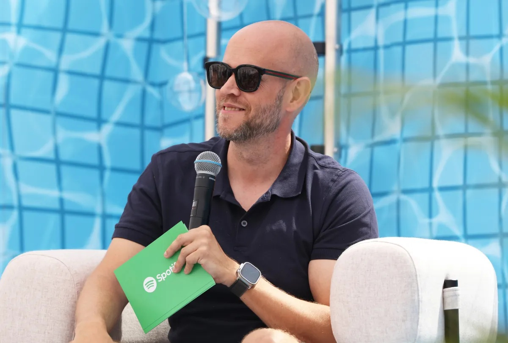
Daniel Ek pariază pe fuziunea nucleară cu startup-ul Europa Fusion
Fondatorul Spotify, Daniel Ek, investește în Europa Fusion, un startup care vrea să revoluționeze energia prin simulări AI și fuziune nucleară.
Citește analiza →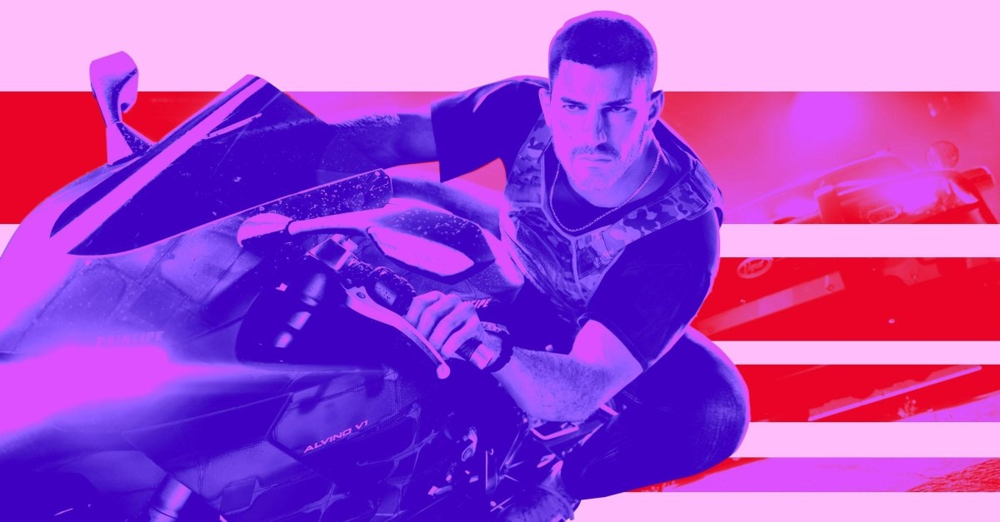
GTA VI spulberă recordurile: 3.79 miliarde dolari într-o singură zi
Rockstar Games confirmă cifrele oficiale pentru GTA VI: 3.79 miliarde dolari și 32.5 milioane precomenzi. Află de ce este cel mai mare succes din istorie.
Citește analiza →Trump amenință cu taxe masive pentru centrele de date AI externe
Donald Trump propune o taxă uriașă pentru companiile care mută centrele de date AI în afara SUA. Află impactul asupra industriei tech globale.
Citește analiza →Energie geotermală: Soluția pentru centrele de date AI?
Google investește în foraje geotermale de mare adâncime. Află cum tehnologia 'super-hot rock' ar putea alimenta viitorul centrelor de date AI.
Citește analiza →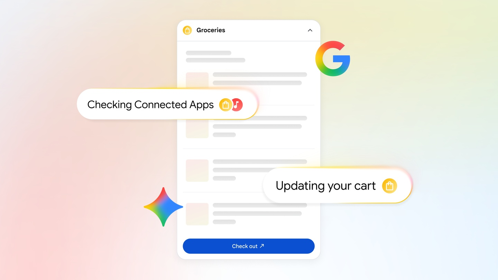
Google lansează Connected Apps: Integrare AI pentru sarcini zilnice
Google introduce Connected Apps în Search și Gemini pentru utilizatorii din SUA. Află ce înseamnă acest protocol pentru viitorul căutărilor.
Citește analiza →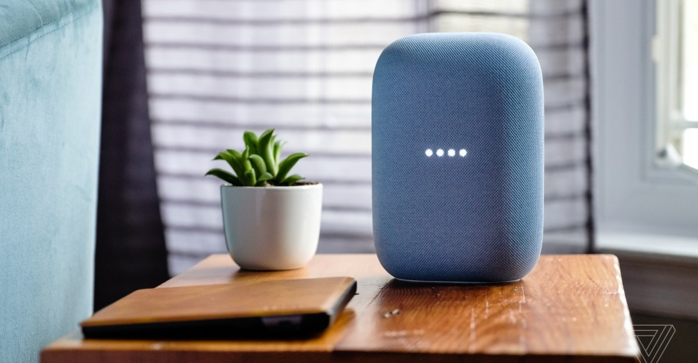
Google închide Assistant pe boxe: Gemini preia controlul în 2027
Google elimină Assistant de pe boxele smart și închide aplicația Nest. Află ce se întâmplă cu dispozitivele tale și tranziția către Gemini.
Citește analiza →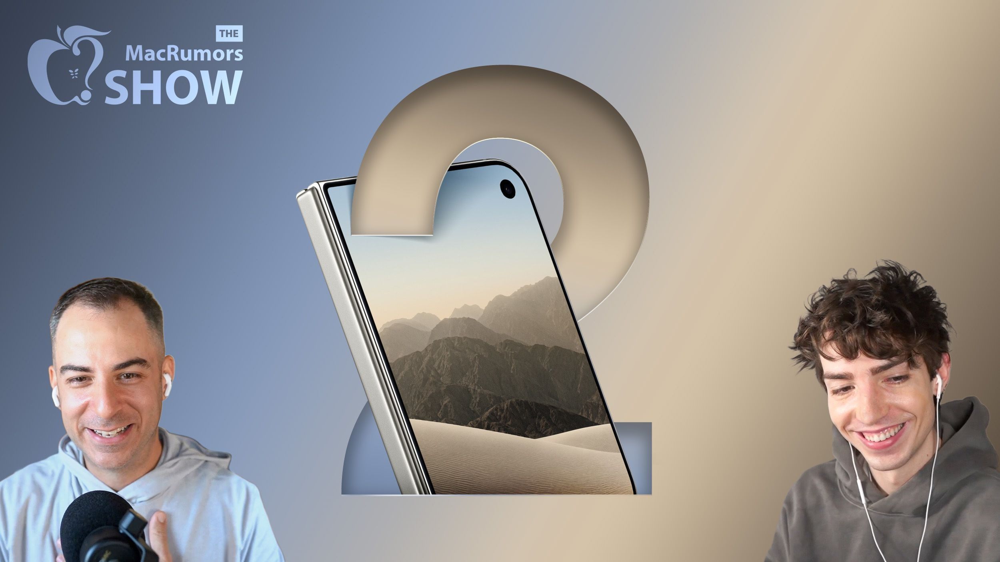
Viitorul iPhone Duo: Zvonuri despre Face ID și design
Analizăm cele mai noi zvonuri despre iPhone Duo: Face ID sub ecran, butoane hibride și planurile Apple pentru un pliabil de 8 inch.
Citește analiza →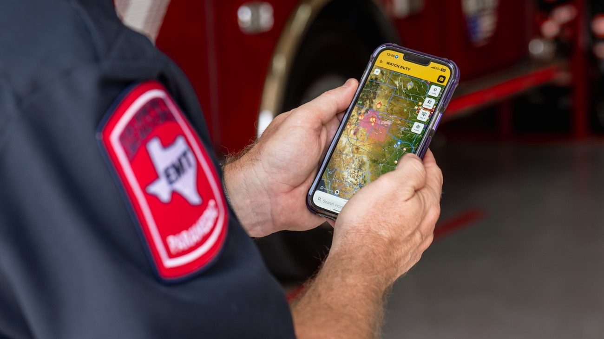
Cum transformă Gemini alertele de incendii în timp real
Google folosește Gemini pentru a transcrie transmisiunile radio ale pompierilor, reducând timpul de alertă în caz de incendii de vegetație.
Citește analiza →Microsoft închide aplicația To Do: Ce trebuie să știi
Microsoft a anunțat retragerea aplicației To Do în 2027. Află ce se întâmplă cu sarcinile tale și care sunt alternativele pentru utilizatorii personali.
Citește analiza →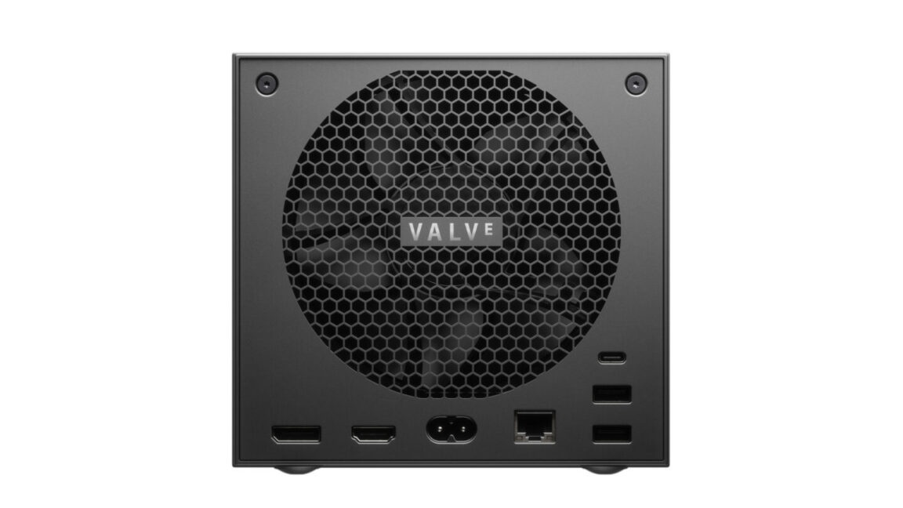
Valve avertizează: Steam Machine ar putea deveni mai scump
Valve anunță posibile creșteri de preț pentru consolele Steam Machine din cauza costurilor ridicate pentru componentele RAM și stocare.
Citește analiza →SpaceX: Dispută pe credite și planuri pentru mini-turnuri celulare
Investitorii SpaceX se tem de planurile lui Musk pentru centre de date în spațiu. Află detalii despre noile mini-turnuri celulare pentru acasă.
Citește analiza →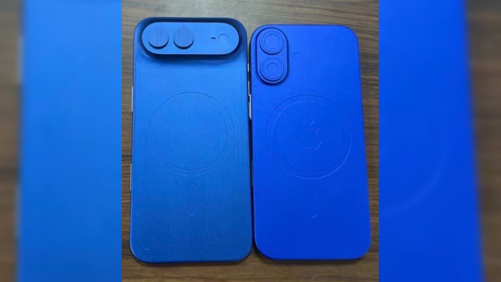
iPhone 18 și iPhone Air 2: Primele imagini cu machetele
Primele machete pentru iPhone 18 și iPhone Air 2 au apărut online. Află ce schimbări aduce noul sistem de camere și la ce să te aștepți în 2027.
Citește analiza →Jensen Huang și Nvidia: Cultul fricii din spatele succesului
Jensen Huang a părăsit Nvidia, iar detalii șocante despre stilul său de management bazat pe umilință și frică ies la iveală.
Citește analiza →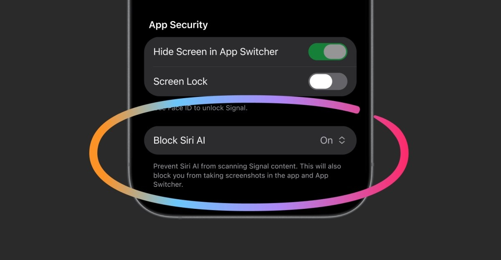
Signal blochează AI-ul: Screenshot-urile interzise pentru Gemini și Siri
Signal introduce restricții stricte pentru screenshot-uri pentru a bloca agenții AI precum Gemini și Siri să acceseze datele tale private.
Citește analiza →
Samsung anunță schimbări majore la nivelul conducerii
Samsung Electronics își reorganizează divizia de semiconductori prin numirea unor noi președinți pentru Memory și System LSI Business.
Citește analiza →
Apple dezvoltă un agent AI care îți va controla Mac-ul
Apple lucrează la un agent AI capabil să opereze aplicații și să scrie cod pe macOS. Află cum va schimba acest lucru modul în care folosim calculatoarele.
Citește analiza →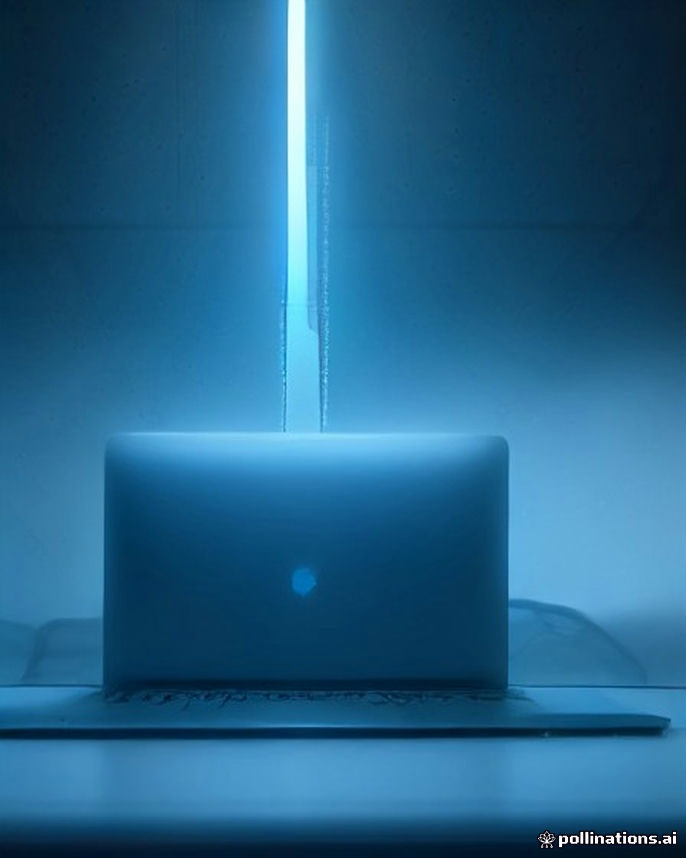
Apple dezvoltă un agent AI care îți va controla aplicațiile
Apple lucrează la un agent AI capabil să navigheze pe web, să scrie cod și să interacționeze cu aplicațiile, concurând cu Meta și OpenAI.
Citește analiza →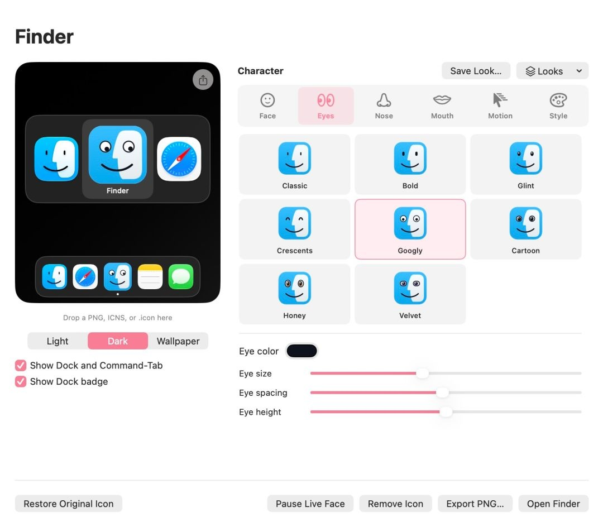
IconSwapper: Personalizează iconițele de pe Mac cu date live
Află cum IconSwapper îți permite să transformi iconițele aplicațiilor de pe Mac în widget-uri dinamice care afișează date live și animații.
Citește analiza →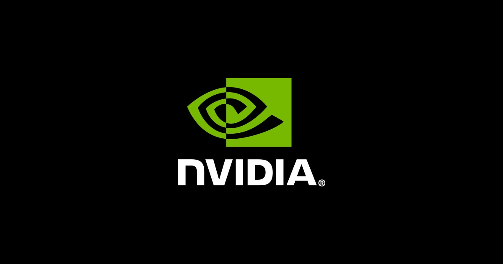
NVIDIA anunță un nou eveniment pentru comunitatea financiară
NVIDIA va participa la conferința UBS Global Technology and AI. Află detaliile despre prezentarea oficială și cum poți urmări transmisiunea.
Citește analiza →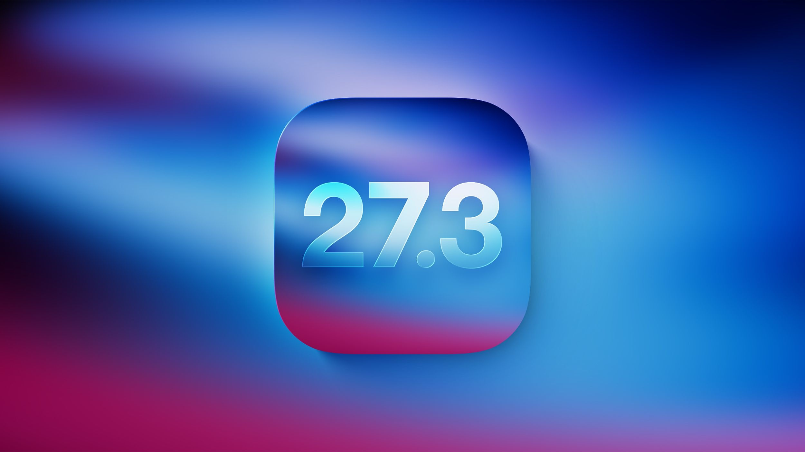
iOS 27.3 Public Beta 2: Safari și Siri AI primesc update-uri
Apple lansează a doua versiune public beta pentru iOS 27.3. Află ce aduce nou pentru Safari, Siri AI și posesorii de iPhone Duo.
Citește analiza →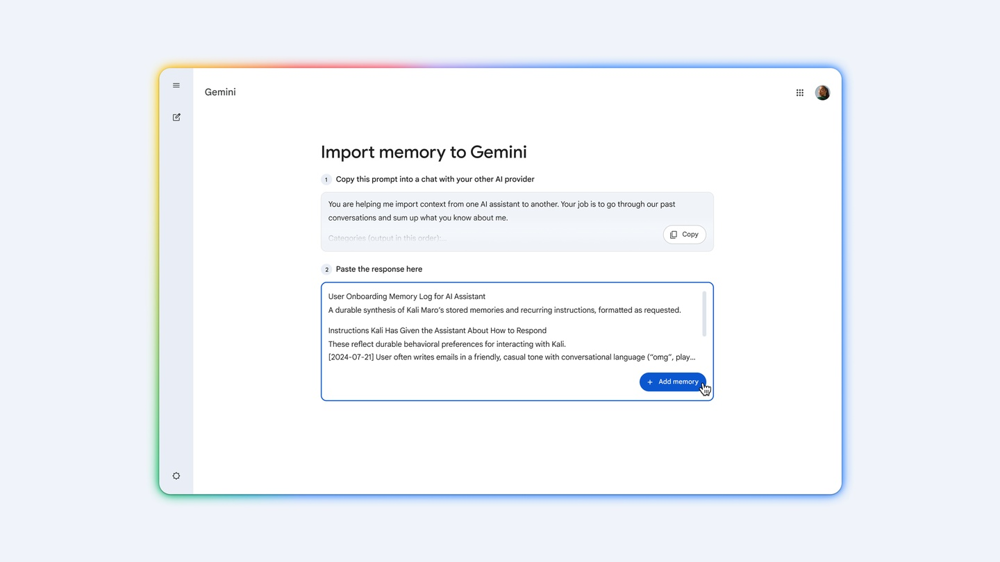
Adio barieră: Acum poți transfera istoricul AI direct în Gemini
Google introduce o funcție esențială: poți importa istoricul, contextul și preferințele din alte aplicații AI direct în Gemini. Află cum.
Citește analiza →
Meta Muse Charm: Gadgetul AI care vrea să îți fie prieten
Meta Muse Charm ar putea costa 300$. Află totul despre noul dispozitiv AI portabil, specificații și dacă merită investiția față de rivali.
Citește analiza →
Google Gemini poate acum să controleze aplicațiile de pe Mac-ul tău
Google Gemini pe Mac primește funcții noi de automatizare. Află cum poate controla aplicațiile, fișierele și browserul pentru a-ți ușura munca.
Citește analiza →
Schimbări la Apple: Șeful diviziei de software pentru cameră se retrage
Jon McCormack, vicepreședintele Apple responsabil de software-ul pentru Camera și Photos, a părăsit compania. Ce impact va avea asupra viitorului iPhone?
Citește analiza →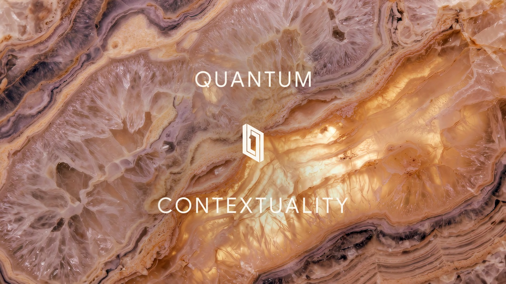
Google demonstrează contextualitatea cuantică la scară largă
Google Quantum AI a demonstrat contextualitatea cuantică pe 105 qubiți, un pas esențial pentru viitorul computerelor cuantice și corecția erorilor.
Citește analiza →
Black Friday 2026: Reduceri masive la sistemele audio Sonos
Sonos lansează ofertele de Black Friday 2026. Află ce soundbar-uri și boxe au prețuri reduse și dacă merită investiția pentru casa ta.
Citește analiza →
Google Gemini pe Mac: AI-ul care îți preia controlul aplicațiilor
Google introduce funcția 'computer use' pentru Gemini pe macOS. Află cum AI-ul navighează aplicații și fișiere pentru a-ți automatiza sarcinile zilnice.
Citește analiza →
Google Gemini poate controla Mac-ul: Ce oferă noul agent AI
Google lansează capabilități de computer use în aplicația Gemini pentru macOS. Află ce poate face agentul AI și când ajunge în România.
Citește analiza →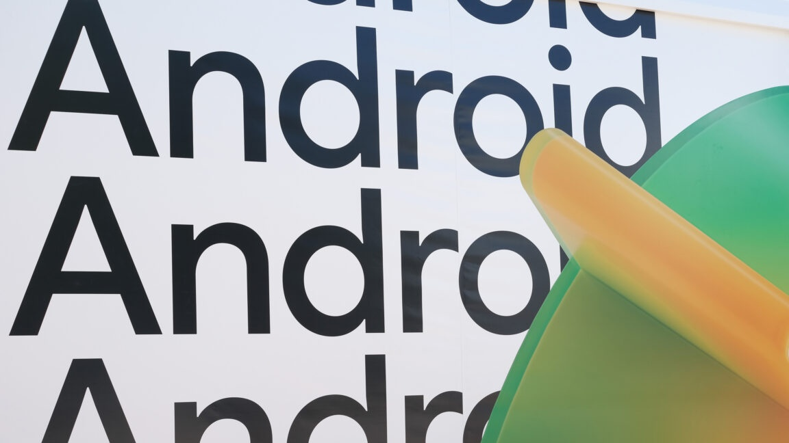
Google blochează sideloading-ul pe Android: Ce se schimbă în 2027
Google impune verificarea obligatorie a dezvoltatorilor pentru aplicațiile Android. Află cum va fi afectat sideloading-ul și cum poți evita restricțiile.
Citește analiza →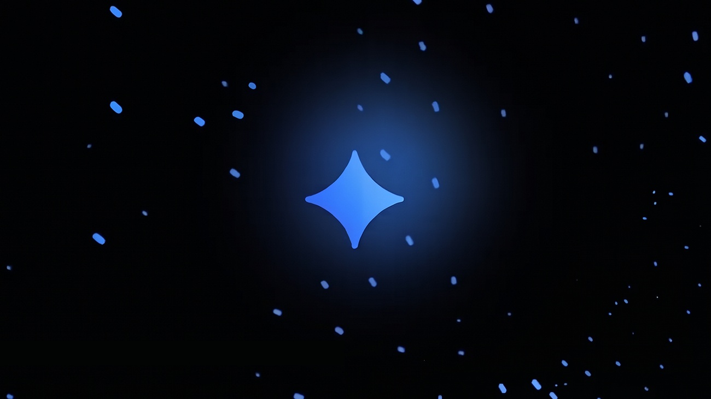
Google lansează Tool Retrieval în Gemini API: Eficiență pentru AI
Google introduce Tool Retrieval în Gemini API pentru a optimiza agenții AI cu biblioteci mari de instrumente. Reducerea latenței și a costurilor.
Citește analiza →
Apple Black Friday 2026: Merită oferta oficială?
Apple anunță evenimentul de Black Friday 2026. Află ce primești, ce produse sunt excluse și de ce resellerii sunt adesea o opțiune mai bună.
Citește analiza →Google Genie 4: Lumea ta virtuală generată prin AI și sunet
Google lansează Genie 4 pentru Gemini API și AI Ultra. Creează lumi interactive 720p cu audio nativ și control în timp real prin simple comenzi text.
Citește analiza →Gemini pe Mac: Acum poate controla aplicații și browserul pentru tine
Google lansează funcția de 'computer use' pentru Gemini pe Mac. Află cum AI-ul poate automatiza sarcini repetitive direct pe desktopul tău.
Citește analiza →
Anthropic debutează spectaculos pe NASDAQ: Cel mai mare IPO din istorie
Anthropic s-a listat pe bursa NASDAQ, atrăgând 81,3 miliarde de dolari și atingând o evaluare de 1,5 trilioane de dolari în cel mai mare IPO din istorie.
Citește analiza →Paramount Plus lansează o ofertă agresivă de Black Friday
Paramount Plus oferă două luni de acces la prețul de 2,99 dolari, o ofertă disponibilă până la finalul lunii noiembrie pentru toți utilizatorii.
Citește analiza →
Google lansează proiecte creative inovatoare prin platforma Flow
Google prezintă proiecte artistice și instrumente audio dezvoltate prin platforma Flow, oferind creatorilor noi posibilități de experimentare cu AI.
Citește analiza →
Apple TV devine casa oficiala F1 ACADEMY in SUA din 2027
Apple extinde parteneriatul cu Formula 1. F1 ACADEMY va fi difuzat exclusiv pe Apple TV in SUA incepand cu sezonul 2027. Detalii aici.
Citește analiza →
Cele mai bune oferte de Black Friday pentru ecosistemul Apple
Profită de reducerile de Black Friday pentru noul MacBook Pro M6, Apple Studio Display și echipamentele audio Sonos în acest sezon de sărbători.
Citește analiza →Consola Analogue 3D primește actualizări wireless prin noua funcție Wi-Fi
Consola Analogue 3D a primit o actualizare firmware ce activează Wi-Fi-ul, permițând actualizări automate și sincronizarea orei.
Citește analiza →
De ce ne place să privim violența: Lecții din lumea șoarecilor
Un nou studiu arată că șoarecii care observă lupte învață tehnici de apărare, sugerând că observarea agresiunii este o strategie de supraviețuire.
Citește analiza →
Samsung TV Plus transmite live ediția 2026 a premiilor MAMA AWARDS
Samsung TV Plus va transmite în direct premiile MAMA AWARDS 2026, oferind fanilor K-pop acces global pe 20 și 21 noiembrie.
Citește analiza →
Elon Musk clarifică distincția dintre Starlink și sistemul militar Starshield
Elon Musk clarifică rolul Starlink în Ucraina, subliniind diferența dintre rețeaua civilă și sistemul militar Starshield controlat de guvernul SUA.
Citește analiza →Comisia Senatului aprobă nominalizarea FCC în ciuda boicotului democrat
Comisia pentru Comerț a Senatului a avansat nominalizarea lui Danielle Thumann pentru FCC, în ciuda boicotului democraților și a acuzațiilor de mărturie falsă.
Citește analiza →
Apple lansează Safari Technology Preview 257 cu îmbunătățiri majore
Apple a lansat Safari Technology Preview 257, aducând optimizări tehnice și remedieri de erori pentru dezvoltatorii care utilizează macOS Tahoe și Golden Gate.
Citește analiza →
Google lansează Gemini 4 Neon: Inteligență avansată pentru sarcini complexe
Google lansează Gemini 4 Neon, un model AI optimizat pentru inginerie complexă și cercetare științifică, cu o fereastră de context de 1 milion de tokenuri.
Citește analiza →
Sony Bravia 8 II OLED: Reduceri masive înainte de Black Friday
Televizorul Sony Bravia 8 II OLED atinge un preț minim istoric, oferind performanțe de top și funcții avansate pentru gaming înainte de Black Friday.
Citește analiza →Apple lansează prima actualizare software pentru dispozitivul HomeView
Apple a lansat actualizarea software 27.2.1 pentru dispozitivul HomeView, reprezentând primul update de la debutul produsului.
Citește analiza →
Google introduce modul incognito pentru funcția AI din Search
Google a lansat firele temporare pentru modul AI din Search, permițând conversații private care nu sunt salvate în istoricul contului.
Citește analiza →Samsung lansează One UI 9.5 Beta: Ce aduce nou pe Galaxy
Samsung a deschis programul beta pentru One UI 9.5. Află noutățile despre cameră, sănătate și confidențialitate pentru seria Galaxy S26.
Citește analiza →
Google aduce aplicația Gemini pe dispozitivele Android cu memorie redusă
Google optimizează aplicația Gemini pentru dispozitivele Android (Go edition), oferind funcții AI avansate pentru milioane de utilizatori de telefoane accesibile.
Citește analiza →Sam Altman avertizează: Oamenii trebuie să controleze viitorul inteligenței artificiale
Sam Altman și Greg Brockman subliniază necesitatea ca oamenii să păstreze controlul asupra AI, respingând ideea unei tranziții către decizii complet autonome.
Citește analiza →
Apple a lansat o nouă actualizare de firmware pentru telecomanda Siri Remote
Apple a lansat versiunea de firmware 0001.0061.0000.0000 pentru generația a patra a telecomenzii Siri Remote.
Citește analiza →
Google lansează actualizarea de noiembrie pentru Marketing Platform
Google a lansat actualizarea din noiembrie pentru Marketing Platform, oferind noi instrumente pentru optimizarea ROI-ului în campaniile de sărbători.
Citește analiza →
Cum să identifici reducerile reale de Black Friday
Află cum să eviți capcanele de preț de Black Friday folosind instrumente de monitorizare și o abordare critică a ofertelor.
Citește analiza →
Ghid esențial: Sfaturi și instrumente Google pentru siguranța ta online
Google oferă sfaturi practice și instrumente esențiale pentru a-ți proteja datele personale și dispozitivele împotriva amenințărilor cibernetice actuale.
Citește analiza →
Apple a anunțat finaliștii pentru premiile App Store 2026
Apple a dezvăluit cei 45 de finaliști pentru premiile App Store 2026, celebrând inovația și designul excepțional în ecosistemul său de aplicații.
Citește analiza →
Teardown-ul Apple HomeView: De ce este noul hub atât de greu de reparat
Analiza iFixit arată că noul Apple HomeView este extrem de dificil de reparat din cauza adezivului puternic și a designului termic complex.
Citește analiza →
NVIDIA își extinde lanțul de aprovizionare pentru a susține infrastructura AI globală
NVIDIA colaborează cu producători cheie pentru a crește capacitatea de fabricare a substraturilor și ambalajelor, vizând o expansiune de 2,5 ori până în 2028.
Citește analiza →Apple MacBook Neo Primește o Reducere Rară de Black Friday
MacBook Neo beneficiază de o reducere rară de 50 de dolari înainte de Black Friday, pornind de la 649 USD.
Citește analiza →NVIDIA și Samsung raportează rezultate financiare record în 2026
NVIDIA și Samsung raportează rezultate financiare istorice, susținute de o cerere masivă pentru tehnologii AI și semiconductori la nivel global.
Citește analiza →
Google extinde funcția Gemini Tasks pentru sarcini administrative complexe
Google lansează funcția Gemini Tasks, permițând asistentului AI să efectueze apeluri, să programeze întâlniri și să gestioneze plăți pentru utilizatori.
Citește analiza →
Nomad lansează reducerile de Black Friday pentru accesorii Apple
Nomad a început campania de Black Friday cu reduceri de până la 30% la accesorii pentru iPhone 18 Pro și stații de încărcare, valabile până pe 1 decembrie.
Citește analiza →iOS 27.3 aduce limite pentru AI și modificări vizuale
Apple testează limite de utilizare pentru funcțiile AI în iOS 27.3 și explorează un design vizual mai fin pentru barele de navigare în cea mai recentă versiune beta.
Citește analiza →
Google lansează funcții noi pentru Gemini: Asistentul tău personal inteligent
Gemini poate acum să gestioneze sarcini complexe, precum programări sau plăți, fiind disponibil pentru utilizatorii din mai multe regiuni globale.
Citește analiza →Google Wallet este acum disponibil oficial pe iOS în SUA
Google Wallet este acum disponibil pe iOS în SUA, permițând utilizatorilor să își organizeze biletele și tichetele prin sincronizarea cu aplicațiile Google.
Citește analiza →
Marele Premiu de Formula 1 din Las Vegas vine pe Apple TV
Apple TV aduce Marele Premiu de Formula 1 din Las Vegas cu funcții noi precum Multiview pe televizoare și sunet imersiv Dolby Atmos.
Citește analiza →
Google permite acum excluderea datelor din antrenarea AI în Gemini
Google actualizează setările Gemini, permițând utilizatorilor să opteze pentru excluderea datelor din antrenarea AI fără a pierde istoricul conversațiilor.
Citește analiza →
Jensen Huang își exprimă disponibilitatea de a reveni la conducerea Nvidia
Fostul CEO Nvidia, Jensen Huang, declară că ar accepta o revenire la conducerea companiei dacă board-ul solicită acest lucru, pe fondul unui sprijin public masiv.
Citește analiza →Flipper One: Computerul Linux de buzunar este disponibil pentru precomandă
Flipper Devices lansează Flipper One, un computer portabil cu Linux, procesor cu 8 nuclee și conectivitate avansată, disponibil acum pe Kickstarter.
Citește analiza →
Aplicația Apple Store este acum optimizată pentru noul iPhone Duo
Apple a actualizat aplicația Apple Store pentru iPhone Duo, îmbunătățind în același timp disponibilitatea stocurilor și oferind piese de reparație DIY.
Citește analiza →
Centrele de date sub asediu: Riscurile războiului modern asupra infrastructurii cloud
Ars Technica analizează impactul atacurilor cu drone asupra centrelor de date și viitorul rezilienței cloud într-o lume marcată de conflicte geopolitice.
Citește analiza →
Google Play anunță cele mai bune aplicații și jocuri ale anului 2026
Google Play a dezvăluit câștigătorii premiilor Best of 2026, evidențiind inovația în productivitate, jocuri cross-platform și experiențe digitale remarcabile.
Citește analiza →
Apple Podcasts desemnează Baby, this is Keke Palmer Show-ul Anului 2026
Apple Podcasts a anunțat oficial că podcastul 'Baby, this is Keke Palmer' a câștigat titlul de Show-ul Anului 2026 datorită impactului său cultural.
Citește analiza →NVIDIA înființează un comitet pentru securitate națională și controlul exporturilor
NVIDIA a creat un nou comitet la nivel de consiliu pentru a supraveghea politicile de securitate națională și conformitatea exporturilor de tehnologie avansată.
Citește analiza →
macOS 27.3 aduce securitate sporită pentru AI și Apple Intelligence în China
Apple introduce noi controale de securitate pentru agenții AI în macOS 27.3 și extinde Apple Intelligence pentru utilizatorii de Mac și iPad din China.
Citește analiza →
NVIDIA, IBM și Fermilab accelerează era calculului cuantic modular
NVIDIA, IBM și Fermilab lansează o platformă de codesign cuantic și un algoritm de decodare care accelerează cercetarea erorilor de 13.000 de ori.
Citește analiza →
Inovația Galaxy redefinește experiența sportivilor la Jocurile Olimpice Dakar 2026
Samsung Electronics integrează tehnologia Galaxy în cadrul Jocurilor Olimpice de Tineret Dakar 2026 pentru a sprijini performanța și conectivitatea sportivilor.
Citește analiza →
Apple lansează un studiu de cercetare privind utilizarea AI în sănătate
Apple a lansat un studiu în colaborare cu OpenEvidence pentru a analiza modul în care AI-ul conversațional poate fi utilizat responsabil în domeniul sănătății.
Citește analiza →